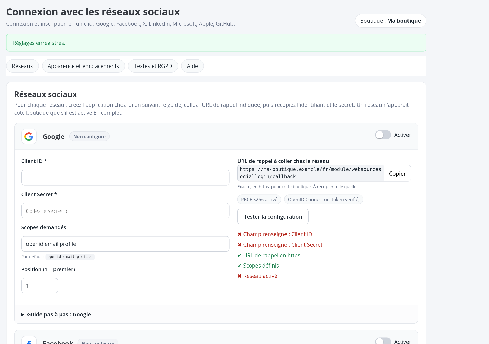
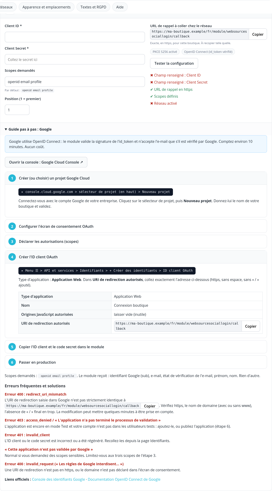
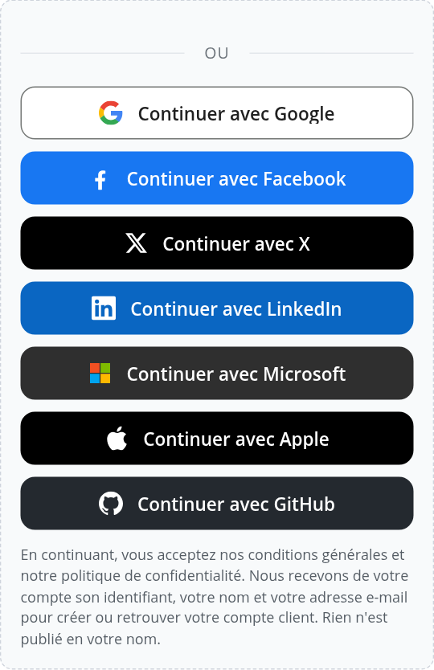
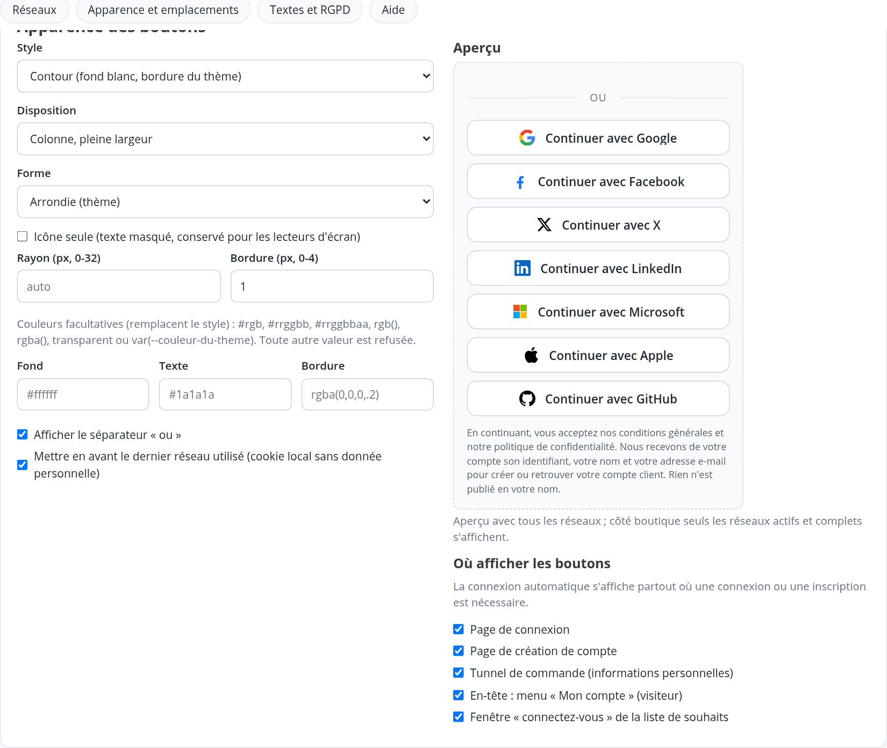

Vos clients se connectent et créent leur compte en un clic. Moins d'abandons au moment de l'inscription, des comptes sans mot de passe à retenir, et une sécurité pensée pour éviter les prises de compte.
Télécharger le zip (0 €)Code source sur GitHubGoogle, Facebook, X (Twitter), LinkedIn, Microsoft, Apple et GitHub, en OAuth 2.0 / OpenID Connect, sans bibliothèque externe.
Pour chaque réseau : création de l'application, URL de rappel à copier, scopes, mise en production et erreurs fréquentes, en français et en anglais.
Jamais de fusion automatique : mot de passe exigé pour lier un compte existant, lien de confirmation si l'e-mail n'est pas vérifié.
3 styles, grille d'icônes, formes et couleurs, aperçu en direct. Connexion, inscription, tunnel de commande, en-tête, liste de souhaits.
Données minimales, export et suppression avec le compte client, aucun jeton d'accès conservé, mention d'information configurable.
Hooks standard et snippets Smarty prêts à coller. Multiboutique et multilingue.




| Version | 1.0.0 |
|---|---|
| Compatibilité | PrestaShop 8.x (à partir de 1.7.7), PHP 7.3+, HTTPS requis |
| Prix | Gratuit (0 €) |
| Licence | Academic Free License 3.0 (AFL-3.0), code ouvert |
| Documentation | Guide utilisateur français et anglais (HTML, PDF, Markdown) |
| Installation | Modules > Gestionnaire de modules > Installer un module |
Besoin d'aide pour créer vos applications Google, Facebook ou Apple, ou pour adapter un thème sur mesure ? Websource peut s'en charger.
Free PrestaShop module: one-click sign-in and sign-up with Google, Facebook, X, LinkedIn, Microsoft, Apple and GitHub. OAuth 2.0 / OpenID Connect with no external library, built-in step-by-step setup guides (fr/en), account-takeover protection (no automatic merging), customisable buttons, GDPR-friendly (minimal data, export and erasure, no access token stored). Works with third-party themes through standard hooks and ready-to-paste Smarty snippets. PrestaShop 8.x (from 1.7.7), PHP 7.3+, HTTPS required. AFL-3.0 licence. Download (free).